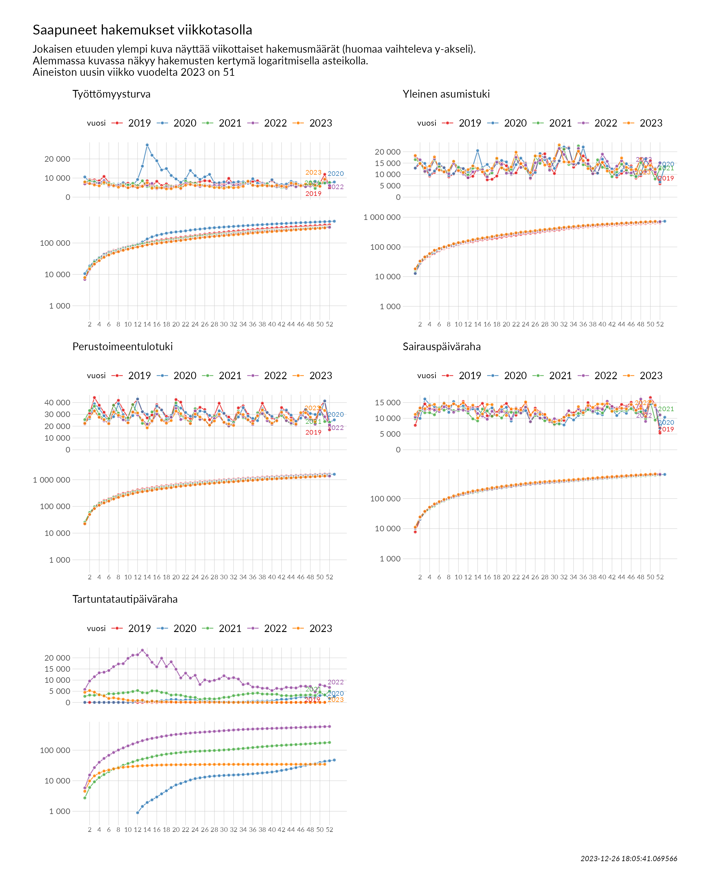
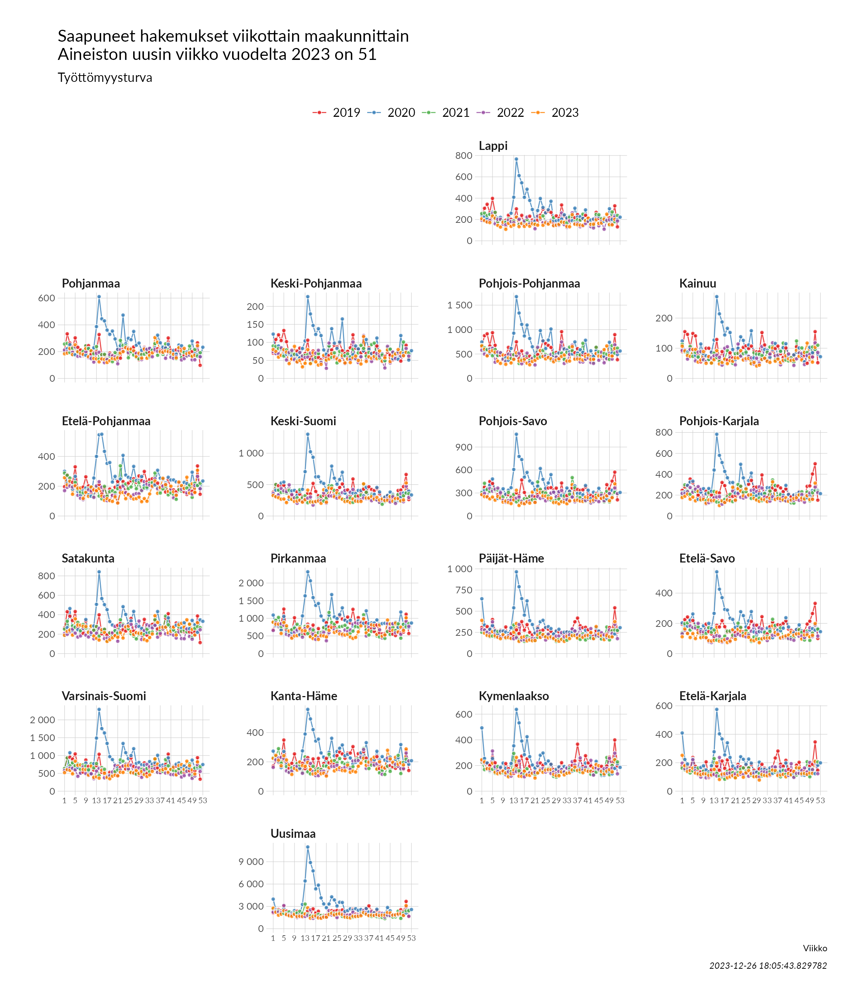
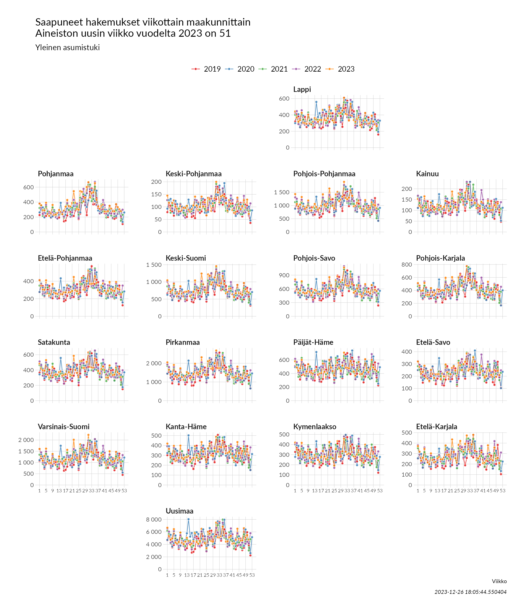
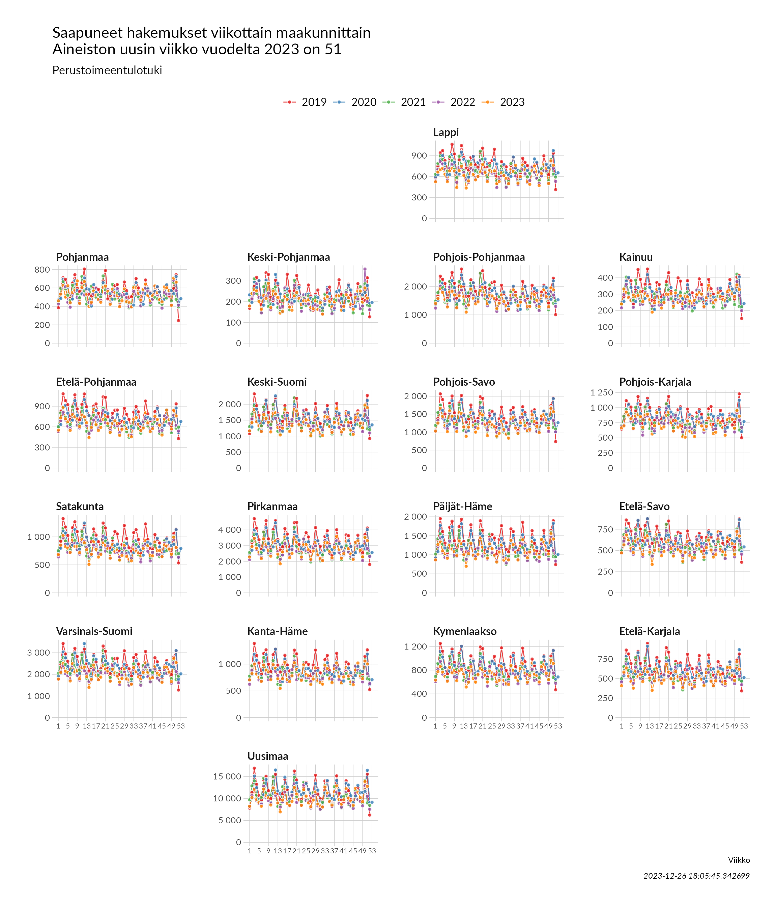
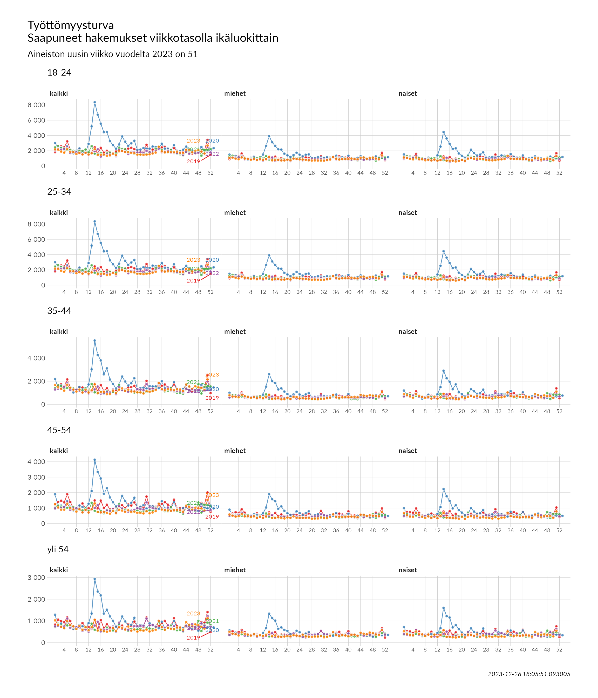
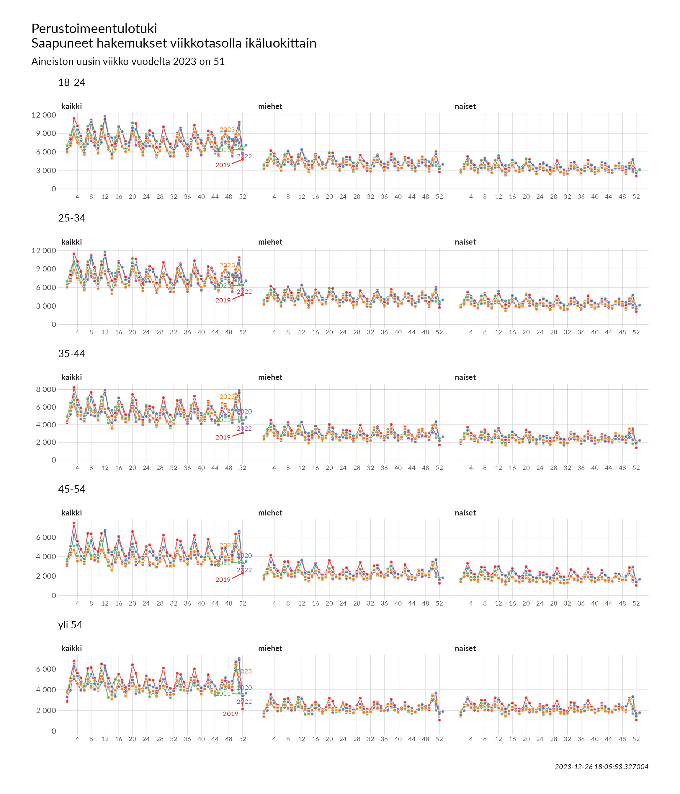
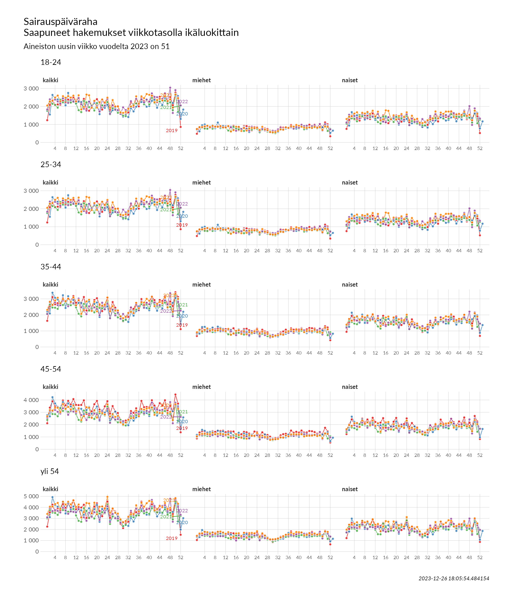

Etuushakemukset
Saapuneiden hakemusten määriä tarkastellaan viikkotasolla vertaillen vuoteen 2022. Koko maan ohella saapuneita hakemuksia analysoidaan maakunnittain sekä ikäluokittain ja sukupuolittain. Päiväkohtaisissa tiedoissa on mukana vain tämä vuosi ja tarkastelutasona koko Suomi ja kaikki hakijat.
Tässä raportissa uusin viikko on 51 ja uusin päivä on maanantai 2023-12-25
Katso tarkemmat tiedot käytetyistä mittareista Aineiston ja mittarien kuvaus -sivulta.
1 Päiväkohtaiset tarkastelut
Alla olevassa taulukossa on esitetty uusimman päivän (maanantai 2023-12-25) hakemusmäärät verrattuna a) samaan viikonpäivään viikko sitten, b) eiliseen sekä c) alkuvuoden hakemusmäärien mediaaniin.
| Saapuneet hakemukset maanantaina 2023-12-25 | |||||
| saapuneet hakemukset | ero viikontakaiseen (maanantai 2023-12-18) | ero alkuvuoden mediaaniin | |||
|---|---|---|---|---|---|
| ero (%) | ero (kpl) | ero (%) | ero (kpl) | ||
| Työttömyysturva | 221 | -83,4 | -1112 | -78,2 | -792 |
| Yleinen asumistuki | 713 | -72,6 | -1891 | -63,7 | -1251 |
| Perustoimeentulotuki | 1493 | -81,6 | -6627 | -65,0 | -2777 |
| Sairauspäiväraha | 72 | -96,2 | -1840 | -96,6 | -2038 |
| Tartuntatautipäiväraha | 1 | -83,3 | -5 | -99,5 | -209 |
Eniten hakemuksia per päivä on vuoden 2020 alusta tullut seuraavasti: työttömyysturva keskiviikkona 2020-04-01 (9066 kpl), yleinen asumistuki maanantaina 2023-07-31 (5982 kpl), perustoimeentulotuki maanantaina 2020-02-17 (9511 kpl), sairauspäiväraha torstaina 2023-08-31 (3609 kpl) ja tartuntatautipäiväraha tiistaina 2022-03-29 (4492 kpl). Hakemusmäärissä on päiväkohtaista vaihtelua ja paremman kuvan kiireisimmästä ajasta saa liukuvan keskiarvon avulla. Kolmen päivän liukuvalla keskiarvolla arkipäivistä laskettuna eniten hakemuksia on vastaanotettu:
- Työttömyysturva: 2020-04-01 - 2020-04-03 (5748 kpl)
- Yleinen asumistuki: 2023-07-31 - 2023-08-02 (4951 kpl)
- Perustoimeentulotuki: 2020-03-16 - 2020-03-18 (8545 kpl)
- Sairauspäiväraha: 2023-03-14 - 2023-03-16 (3179 kpl)
- Tartuntatautipäiväraha: 2022-03-29 - 2022-03-31 (4451 kpl)

2 Viikottaiset tarkastelut
Suurimmat viikkotason hakijamäärät etuuksittain ovat vuoden 2019 alusta olleet: työttömyysturva viikolla 14 vuonna 2020 (27318 kpl), yleinen asumistuki viikolla 31 vuonna 2023 (22993 kpl), perustoimeentulotuki viikolla 3 vuonna 2019 (44241 kpl), sairauspäiväraha viikolla 50 vuonna 2019 (16599 kpl) ja tartuntatautipäiväraha viikolla 13 vuonna 2022 (23440 kpl).

Alla vastaavat viikkotason tiedot etuuksittain taulukossa.
| Saapuneet hakemukset viikottain 2022 ja 2023 | |||||||||||||||
| Työttömyysturva | Yleinen asumistuki | Perustoimeentulotuki | Sairauspäiväraha | Tartuntatautipäiväraha | |||||||||||
|---|---|---|---|---|---|---|---|---|---|---|---|---|---|---|---|
| 2022 | 2023 | ero % | 2022 | 2023 | ero % | 2022 | 2023 | ero % | 2022 | 2023 | ero % | 2022 | 2023 | ero % | |
| 1 | 6929 | 7916 | 14,2 | 17906 | 18320 | 2,3 | 21793 | 22417 | 2,9 | 10363 | 11246 | 8,5 | 5817 | 4518 | -22,3 |
| 2 | 7198 | 7096 | -1,4 | 16453 | 14799 | -10,1 | 28519 | 27646 | -3,1 | 13207 | 13298 | 0,7 | 9598 | 5306 | -44,7 |
| 3 | 6951 | 6375 | -8,3 | 11367 | 12870 | 13,2 | 33374 | 32887 | -1,5 | 12604 | 13055 | 3,6 | 11518 | 4595 | -60,1 |
| 4 | 7303 | 5885 | -19,4 | 11999 | 13662 | 13,9 | 27291 | 27568 | 1,0 | 13143 | 14055 | 6,9 | 13273 | 3435 | -74,1 |
| 5 | 8538 | 7706 | -9,7 | 16875 | 17687 | 4,8 | 24490 | 25514 | 4,2 | 12591 | 14430 | 14,6 | 13537 | 2897 | -78,6 |
| 6 | 5825 | 6427 | 10,3 | 12174 | 11898 | -2,3 | 22808 | 22079 | -3,2 | 12166 | 12809 | 5,3 | 14308 | 1763 | -87,7 |
| 7 | 6245 | 5998 | -4,0 | 10970 | 11193 | 2,0 | 32876 | 31952 | -2,8 | 13665 | 14750 | 7,9 | 16042 | 2058 | -87,2 |
| 8 | 6096 | 5213 | -14,5 | 10288 | 11866 | 15,3 | 28254 | 29239 | 3,5 | 13214 | 13834 | 4,7 | 17254 | 1650 | -90,4 |
| 9 | 5706 | 5942 | 4,1 | 14902 | 15772 | 5,8 | 25412 | 27968 | 10,1 | 11933 | 14601 | 22,4 | 17381 | 1405 | -91,9 |
| 10 | 4947 | 4929 | -0,4 | 11407 | 11734 | 2,9 | 23197 | 22800 | -1,7 | 12870 | 13789 | 7,1 | 19764 | 956 | -95,2 |
| 11 | 5519 | 5828 | 5,6 | 10185 | 10865 | 6,7 | 32234 | 31931 | -0,9 | 12572 | 14892 | 18,5 | 21191 | 831 | -96,1 |
| 12 | 4803 | 4986 | 3,8 | 8566 | 12112 | 41,4 | 29492 | 31151 | 5,6 | 12437 | 12987 | 4,4 | 21372 | 811 | -96,2 |
| 13 | 5709 | 5659 | -0,9 | 11139 | 13731 | 23,3 | 25487 | 24957 | -2,1 | 13689 | 14165 | 3,5 | 23440 | 963 | -95,9 |
| 14 | 6249 | 7510 | 20,2 | 11903 | 12647 | 6,3 | 21728 | 18535 | -14,7 | 11533 | 10061 | -12,8 | 21113 | 295 | -98,6 |
| 15 | 7190 | 4661 | -35,2 | 12041 | 11122 | -7,6 | 23939 | 24573 | 2,6 | 10749 | 11381 | 5,9 | 18005 | 577 | -96,8 |
| 16 | 4404 | 4871 | 10,6 | 8907 | 11683 | 31,2 | 30369 | 32768 | 7,9 | 9694 | 14408 | 48,6 | 15963 | 414 | -97,4 |
| 17 | 4779 | 4882 | 2,2 | 11869 | 12666 | 6,7 | 25852 | 25032 | -3,2 | 12234 | 14353 | 17,3 | 19841 | 256 | -98,7 |
| 18 | 5142 | 4322 | -15,9 | 15441 | 17125 | 10,9 | 23433 | 22499 | -4,0 | 10976 | 10986 | 0,1 | 16072 | 268 | -98,3 |
| 19 | 4987 | 4411 | -11,6 | 14402 | 12877 | -10,6 | 27567 | 24746 | -10,2 | 12124 | 13672 | 12,8 | 18213 | 246 | -98,6 |
| 20 | 5865 | 5333 | -9,1 | 10483 | 12030 | 14,8 | 35044 | 32756 | -6,5 | 11529 | 10911 | -5,4 | 14887 | 108 | -99,3 |
| 21 | 4351 | 4662 | 7,1 | 10582 | 13290 | 25,6 | 25635 | 30599 | 19,4 | 9818 | 12988 | 32,3 | 10983 | 131 | -98,8 |
| 22 | 7084 | 6222 | -12,2 | 17562 | 19802 | 12,8 | 26709 | 26865 | 0,6 | 13309 | 13018 | -2,2 | 13134 | 145 | -98,9 |
| 23 | 6433 | 6683 | 3,9 | 13073 | 14707 | 12,5 | 22047 | 22236 | 0,9 | 11717 | 12616 | 7,7 | 10907 | 73 | -99,3 |
| 24 | 6246 | 6041 | -3,3 | 14058 | 12568 | -10,6 | 32957 | 30225 | -8,3 | 13547 | 15192 | 12,1 | 12166 | 56 | -99,5 |
| 25 | 5574 | 6331 | 13,6 | 8396 | 10788 | 28,5 | 25842 | 27776 | 7,5 | 8934 | 11123 | 24,5 | 8038 | 143 | -98,2 |
| 26 | 6198 | 5906 | -4,7 | 15114 | 18179 | 20,3 | 25219 | 25317 | 0,4 | 11431 | 12612 | 10,3 | 10101 | 142 | -98,6 |
| 27 | 6154 | 5634 | -8,4 | 16210 | 18089 | 11,6 | 20782 | 20890 | 0,5 | 10057 | 11244 | 11,8 | 9469 | 107 | -98,9 |
| 28 | 6182 | 5006 | -19,0 | 17658 | 14119 | -20,0 | 26484 | 24382 | -7,9 | 10202 | 11225 | 10,0 | 9926 | 112 | -98,9 |
| 29 | 6040 | 4965 | -17,8 | 11866 | 14461 | 21,9 | 28775 | 30044 | 4,4 | 8957 | 9420 | 5,2 | 10566 | 82 | -99,2 |
| 30 | 5797 | 4665 | -19,5 | 16177 | 17020 | 5,2 | 22823 | 23331 | 2,2 | 9873 | 8872 | -10,1 | 11955 | 26 | -99,8 |
| 31 | 7526 | 5134 | -31,8 | 21426 | 22993 | 7,3 | 20264 | 21900 | 8,1 | 9359 | 9302 | -0,6 | 10722 | 10 | -99,9 |
| 32 | 6141 | 4898 | -20,2 | 18807 | 15534 | -17,4 | 21458 | 20563 | -4,2 | 10385 | 10333 | -0,5 | 11113 | 8 | -99,9 |
| 33 | 6152 | 5115 | -16,9 | 15251 | 15430 | 1,2 | 31594 | 31425 | -0,5 | 12397 | 10942 | -11,7 | 10477 | 13 | -99,9 |
| 34 | 6275 | 5640 | -10,1 | 14557 | 15681 | 7,7 | 28265 | 29804 | 5,4 | 11057 | 11042 | -0,1 | 8003 | 9 | -99,9 |
| 35 | 7896 | 8327 | 5,5 | 21452 | 20207 | -5,8 | 25312 | 25454 | 0,6 | 13051 | 13697 | 4,9 | 8419 | 9 | -99,9 |
| 36 | 6030 | 6245 | 3,6 | 15563 | 16061 | 3,2 | 21229 | 22303 | 5,1 | 11678 | 11789 | 1,0 | 6891 | 11 | -99,8 |
| 37 | 5964 | 5802 | -2,7 | 14624 | 12571 | -14,0 | 29476 | 28624 | -2,9 | 13697 | 14069 | 2,7 | 6933 | 5 | -99,9 |
| 38 | 6651 | 6133 | -7,8 | 10309 | 12628 | 22,5 | 30626 | 33680 | 10,0 | 12203 | 13470 | 10,4 | 6340 | 8 | -99,9 |
| 39 | 5654 | 5978 | 5,7 | 13947 | 14375 | 3,1 | 24588 | 26627 | 8,3 | 13157 | 14522 | 10,4 | 6372 | 9 | -99,9 |
| 40 | 5642 | 5817 | 3,1 | 18939 | 15278 | -19,3 | 21593 | 22573 | 4,5 | 12838 | 14524 | 13,1 | 5321 | 10 | -99,8 |
| 41 | 5515 | 6170 | 11,9 | 15766 | 11509 | -27,0 | 25202 | 24503 | -2,8 | 15408 | 14671 | -4,8 | 6304 | 11 | -99,8 |
| 42 | 5540 | 5740 | 3,6 | 11280 | 11018 | -2,3 | 30898 | 31830 | 3,0 | 13756 | 12234 | -11,1 | 5971 | 8 | -99,9 |
| 43 | 4785 | 5415 | 13,2 | 13657 | 12252 | -10,3 | 24709 | 27339 | 10,6 | 13254 | 12913 | -2,6 | 6783 | 3 | -100,0 |
| 44 | 6301 | 7318 | 16,1 | 16002 | 17249 | 7,8 | 22664 | 24937 | 10,0 | 12961 | 13219 | 2,0 | 6604 | 10 | -99,8 |
| 45 | 5412 | 6948 | 28,4 | 10616 | 13098 | 23,4 | 20957 | 21765 | 3,9 | 13466 | 12987 | -3,6 | 6485 | 24 | -99,6 |
| 46 | 6211 | 5990 | -3,6 | 10664 | 12120 | 13,7 | 30025 | 31394 | 4,6 | 14207 | 14391 | 1,3 | 7269 | 23 | -99,7 |
| 47 | 5476 | 6808 | 24,3 | 11684 | 12287 | 5,2 | 27489 | 31369 | 14,1 | 12584 | 12547 | -0,3 | 7244 | 23 | -99,7 |
| 48 | 5797 | 6671 | 15,1 | 17193 | 16990 | -1,2 | 25952 | 27645 | 6,5 | 16124 | 13116 | -18,7 | 7182 | 23 | -99,7 |
| 49 | 6361 | 6208 | -2,4 | 11233 | 13357 | 18,9 | 21619 | 23677 | 9,5 | 9019 | 10536 | 16,8 | 4650 | 19 | -99,6 |
| 50 | 5679 | 5674 | -0,1 | 12227 | 14014 | 14,6 | 33867 | 35879 | 5,9 | 15728 | 15365 | -2,3 | 7916 | 19 | -99,8 |
| 51 | 8983 | 9435 | 5,0 | 11082 | 12270 | 10,7 | 27980 | 33252 | 18,8 | 13704 | 14149 | 3,2 | 7401 | 23 | -99,7 |
| 52 | 6085 | — | — | 15133 | — | — | 21071 | — | — | 11051 | — | — | 6719 | — | — |
3 Maakunnittain viikkotasolla
Alueellinen tarkastelu osoittaa, että työttömyysturvan hakemusmäärien ero vuoteen 2020 nähden on ollut suurin viikolla 45, jolloin se oli suurinta seuraavissa maakunnissa: Satakunta (+102,6 %), Varsinais-Suomi (+88,1 %) ja Pohjanmaa (+48,6 %). Viime viikolla (viikko 51) ero vuoden takaiseen oli suurinta näissä maakunnissa: Kymenlaakso (-17,6 %), Etelä-Pohjanmaa (+15,4 %) ja Pohjois-Savo (+14,8 %).
Yleisessä asumistuessa muutos on ollut suurinta vuoteen 2020 verrattuna viikolla 12, jolloin se oli suurinta seuraavissa maakunnissa: Keski-Pohjanmaa (+68,4 %), Pohjois-Savo (+65,3 %) ja Keski-Suomi (+62,2 %). Viime viikolla (viikko 51) ero vuoden takaiseen oli suurinta näissä maakunnissa: Pohjanmaa (+30,4 %), Kanta-Häme (+29,9 %) ja Pohjois-Savo (+19,7 %).
Perustoimeentulotuessa taas muutos on ollut suurin vuoteen 2020 verrattuna viikolla 21, jolloin se oli suurinta seuraavissa maakunnissa: Kanta-Häme (+27,4 %), Päijät-Häme (+24,5 %) ja Pohjois-Karjala (+23,9 %). Viime viikolla (viikko 51) ero vuoden takaiseen oli suurinta näissä maakunnissa: Päijät-Häme (+26,9 %), Etelä-Pohjanmaa (+22,4 %) ja Kanta-Häme (+22,1 %).
Sairauspäivärahassa muutos on ollut suurin vuoteen 2020 verrattuna viikolla 16, jolloin se oli suurinta seuraavissa maakunnissa: Pirkanmaa (+124,6 %), Pohjois-Karjala (+85,9 %) ja Keski-Pohjanmaa (+67 %). Viime viikolla (viikko 51) ero vuoden takaiseen oli suurinta näissä maakunnissa: Etelä-Savo (-39,5 %), Päijät-Häme (+30,8 %) ja Lappi (+28,6 %).




4 Ikäluokittain ja sukupuolittain viikkotasolla
Ikäryhmätarkastelun nuorin ikäluokka on muutettu 1.4.2021 kattamaan vain 18–24-vuotiaat, kun aiemmin se sisälsi myös muut alle 25-vuotiaat. Alle 18-vuotiaat ovat edelleen mukana kokonaistarkastelussa. Eniten vaikutusta muutoksella on perustoimeentulotuen nuorimman ikäluokan saajamääriin. Aiempi luokittelu oli käytössä tilannekatsauksissa, jotka on kirjoitettu ennen 1.4.2021.
Ikäluokittainen tarkastelu osoittaa, että ero työttömyysturvan hakijamäärissä on ollut suurinta viime vuoteen nähden viikolla 45, jolloin se oli suurinta seuraavissa ikäluokissa: 18-24 (+30,5 %), 25-34 (+30,5 %), yli 54 (+27,8 %).
Yleisessä asumistuessa ero viime vuoteen on ollut suurin viikolla 12, jolloin eroa oli eniten ikäluokissa: yli 54 (+88 %), yli 54 (+62,7 %), 45-54 (+58,8 %).
Perustoimeentulotuessa taas ero on ollut suurin viikolla 21, jolloin eroa oli eniten ikäluokissa: 35-44 (+27,7 %), 35-44 (+26,1 %), 35-44 (+24,7 %).
Sairauspäivärahassa ero on ollut suurin viikolla 16, jolloin eroa oli eniten ikäluokissa: yli 54 (+64,4 %), 18-24 (+59,5 %), 25-34 (+59,5 %).



